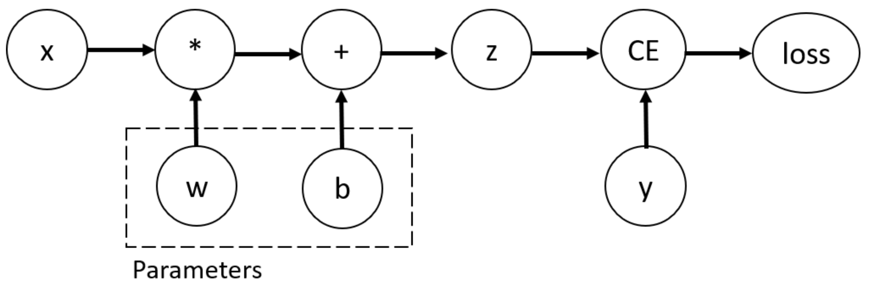

Introduction to PyTorch
A hands-on walkthrough of PyTorch fundamentals — from tensors and automatic differentiation to training a convolutional network on a GPU and adapting pre-trained models.
PyTorch is a popular neural net framework with the following features:
- Automatic differentiation
- Compiling computation graphs
- Libraries of algorithms and network primitives, providing high-level abstractions for working with neural networks
- Support for graphics processing units (GPUs)
1. Tensors
Tensors are a specialized data structure very similar to arrays and matrices. In PyTorch, we use tensors to encode the inputs and outputs of a model, as well as the model's parameters.
Tensors are similar to NumPy's ndarrays, except that tensors can run on GPUs or other hardware accelerators.
Initializing a tensor
import torch
import numpy as np
import math
# Create a tensor directly from data
x = torch.tensor([[1, 2], [3, 4]], dtype=torch.float32)
print("x:", x)
# Create a tensor of zeros
y = torch.zeros(2, 2)
print("y:", y)
# Create a tensor of ones
z = torch.ones(2, 2)
print("z:", z)
# Create a random tensor
w = torch.rand(2, 2)
print("w:", w)
# Create a tensor from a NumPy array
np_array = np.array([1, 2, 3])
x_np = torch.from_numpy(np_array)
print("x_np:", x_np)Attributes of a tensor
tensor = torch.tensor([[1, 2, 3], [3, 4, 5]])
print(f"Shape of tensor: {tensor.shape}")
print(f"Datatype of tensor: {tensor.dtype}")
print(f"Device tensor is stored on: {tensor.device}")Operations on tensors
# Move the tensor to GPU if available
if torch.cuda.is_available():
tensor = tensor.to("cuda")
# Standard numpy-like indexing and slicing
tensor = torch.tensor([[1, 2, 3], [3, 4, 5]])
print("First row: ", tensor[0])
print("First column: ", tensor[:, 0])# Matrix multiplication
tensor = torch.ones(3, 3)
y1 = tensor @ tensor.T
y2 = tensor.matmul(tensor.T)
print("y1: ", y1)
print("y2: ", y2)# Element-wise product
z1 = tensor * tensor
z2 = tensor.mul(tensor)
print("z1: ", z1)
print("z2: ", z2)# Common functions
a = torch.rand(2, 4) * 2 - 1
print('Common functions:')
print(torch.abs(a))
print(torch.ceil(a))
print(torch.floor(a))
print(torch.clamp(a, -0.5, 0.5))
# Reshape
a = torch.arange(4.)
a_reshaped = torch.reshape(a, (2, 2))
b = torch.tensor([[0, 1], [2, 3]])
b_reshaped = torch.reshape(b, (-1,))
print("a_reshaped", a_reshaped)
print("b_reshaped", b_reshaped)Tensor broadcasting
x1 = torch.tensor([[1, 2, 3], [3, 4, 5]])
x2 = torch.tensor([2, 2, 2])
doubled = x1 * x2
print(doubled)2. Automatic Differentiation
- Instead of computing backpropagation manually, an autodiff system performs backprop in a completely mechanical way.
- An autodiff system will convert the program into a sequence of primitive operations which have specified routines for computing derivatives.
Distinction of the concepts
- Backpropagation: the mathematical algorithm we use to compute the gradient.
- Automatic differentiation (AutoDiff): any software that implements backpropagation. Examples: Autograd, TensorFlow, PyTorch, JAX, etc.
- Reverse-mode AD: a method to get exact derivatives efficiently, by storing information as you go forward that you can reuse as you go backwards.
2.1 Autograd
Autograd is a Python package for automatic differentiation. From the Autograd GitHub repository:
- Autograd can automatically differentiate native Python and NumPy code.
- It can handle a large subset of Python's features, including loops, conditional statements (if/else), recursion, and closures.
- It can also compute higher-order derivatives.
- It uses reverse-mode differentiation (a.k.a. backpropagation) so it can efficiently take gradients of scalar-valued functions with respect to array-valued arguments.
import autograd.numpy as jnp # Import thinly-wrapped numpy
from autograd import grad # Basically the only autograd function you need
# Define a function like normal, using Python and (autograd's) NumPy
def tanh(x):
y = jnp.exp(-x)
return (1.0 - y) / (1.0 + y)
# Create a *function* that computes the gradient of tanh
grad_tanh = grad(tanh)
# Evaluate the gradient at x = 1.0
print(grad_tanh(1.0))
# Compare to numeric gradient computed using finite differences
print((tanh(1.0001) - tanh(0.9999)) / 0.0002)2.2 PyTorch automatic differentiation
To compute the gradients of the loss function, PyTorch has a built-in differentiation engine called torch.autograd that traces the computation dynamically at runtime. It supports automatic computation of gradients for any computational graph.
- In the forward pass,
torch.autogradruns the requested operation to compute the resulting tensor. For each primitive operation, data and the operation's gradient function are stored in the computation graph. - In the backward pass,
torch.autogradcomputes the gradients using the gradient function of each primitive operation and accumulates gradients using the chain rule.
Consider the one-layer neural network below:
import torch
x = torch.ones(5) # input tensor
y = torch.zeros(3) # expected output
w = torch.randn(5, 3, requires_grad=True)
b = torch.randn(3, requires_grad=True)
z = torch.matmul(x, w) + b
loss = torch.nn.functional.binary_cross_entropy_with_logits(z, y)The code above defines the following computation graph:

We need to be able to compute the gradients of the loss function with respect to the variables w and b, so we've set the requires_grad property of those tensors.
Computing gradients: to compute dw and db, we call loss.backward() and retrieve the values from w.grad and b.grad.
loss.backward()
print(w.grad)
print(b.grad)Disabling gradient tracking: when we have trained the model and just want to run inference on the test data, we only want to do forward computations through the network. We can stop tracking computations by surrounding our computation code with a torch.no_grad() block. This helps reduce memory consumption. Another case where you might want to disable gradient tracking is to mark some parameters in the neural network as frozen parameters.
z = torch.matmul(x, w) + b
print(z.requires_grad)
with torch.no_grad():
z = torch.matmul(x, w) + b
print(z.requires_grad)3. Building a Simple Neural Network
import torch.nn as nn
import torch.optim as optim
# Define the neural network
class SimpleNet(nn.Module):
def __init__(self):
super(SimpleNet, self).__init__()
self.fc1 = nn.Linear(2, 8, bias=False)
self.fc2 = nn.Linear(8, 1)
def forward(self, x):
x = torch.relu(self.fc1(x))
x = self.fc2(x)
return x
net = SimpleNet()
print(net)
# Define the loss function and the optimizer
criterion = nn.MSELoss()
optimizer = optim.SGD(net.parameters(), lr=0.01)
# Prepare some dummy data and labels
data = torch.tensor([[1., 2.], [3., 4.]], dtype=torch.float32)
labels = torch.tensor([[0.], [1.]], dtype=torch.float32)
# Train the neural network
for epoch in range(500):
# Forward pass
outputs = net(data)
loss = criterion(outputs, labels)
# IMPORTANT: Zero the gradients
optimizer.zero_grad()
# Backward pass
loss.backward()
optimizer.step()
# Print the loss for this epoch
if (epoch + 1) % 100 == 0:
print(f"Epoch [{epoch + 1}/{500}], Loss: {loss.item():.4f}")4. PyTorch Datasets and DataLoaders
Datasets and DataLoaders are essential components for handling data in PyTorch. A Dataset is a collection of data, and a DataLoader helps to efficiently load the data in batches during training.
In this example, we'll use the FashionMNIST dataset, which contains 60,000 training images and 10,000 testing images of 10 different clothing items.
import torchvision
import torchvision.transforms as transforms
# Define data transformations
transform = transforms.Compose([
transforms.Resize(28),
transforms.ToTensor(),
transforms.Normalize((0.5,), (0.5,))
])
# Load the FashionMNIST dataset
train_dataset = torchvision.datasets.FashionMNIST(
root='./data', train=True, download=True, transform=transform
)
test_dataset = torchvision.datasets.FashionMNIST(
root='./data', train=False, download=True, transform=transform
)
# Create DataLoaders for train and test datasets
train_loader = torch.utils.data.DataLoader(
train_dataset, batch_size=512, shuffle=True, num_workers=2
)
test_loader = torch.utils.data.DataLoader(
test_dataset, batch_size=512, shuffle=False, num_workers=2
)
print("Num training examples: {}".format(len(train_dataset)))
print("Num test examples: {}".format(len(test_dataset)))
# List of class labels
classes = [
'T-shirt/top', 'Trouser', 'Pullover', 'Dress', 'Coat',
'Sandal', 'Shirt', 'Sneaker', 'Bag', 'Ankle boot'
]5. Visualizing Examples from the FashionMNIST Dataset
import matplotlib.pyplot as plt
import numpy as np
# Function to unnormalize and display an image
def imshow(img):
img = img / 2 + 0.5 # Unnormalize
npimg = img.numpy()
plt.imshow(np.transpose(npimg, (1, 2, 0)))
plt.show()
# Get a batch of training data
dataiter = iter(train_loader)
images, labels = next(dataiter)
# Display the images in a grid along with their labels
imshow(torchvision.utils.make_grid(images[:16]))
print(" -- ".join(f"{classes[labels[j]]}" for j in range(8)))
print(" -- ".join(f"{classes[labels[j]]}" for j in range(8, 16)))With the dataset loaded and the DataLoader created, we can now train our neural network using the FashionMNIST dataset. Let's modify our previous SimpleNet example to handle 28×28 images and 10 output classes.
6. Training on the CPU = Slow!
import torch.nn.functional as F
# Define the neural network for FashionMNIST
class FashionMNISTNet(nn.Module):
def __init__(self):
super(FashionMNISTNet, self).__init__()
self.conv1 = nn.Conv2d(1, 16, 3)
self.pool = nn.MaxPool2d(2, 2)
self.conv2 = nn.Conv2d(16, 32, 3)
self.fc1 = nn.Linear(32 * 5 * 5, 128)
self.fc2 = nn.Linear(128, 64)
self.fc3 = nn.Linear(64, 10)
def forward(self, x):
x = self.pool(F.relu(self.conv1(x)))
x = self.pool(F.relu(self.conv2(x)))
x = x.view(-1, 32 * 5 * 5)
x = F.relu(self.fc1(x))
x = F.relu(self.fc2(x))
x = self.fc3(x)
return x
# Create an instance of the neural network
net = FashionMNISTNet()
print(net)
# Define the loss function and the optimizer
criterion = nn.CrossEntropyLoss()
optimizer = optim.SGD(net.parameters(), lr=0.01, momentum=0.9)
# Train the neural network using the FashionMNIST dataset
num_epochs = 5
for epoch in range(num_epochs):
running_loss = 0.0
for i, (inputs, labels) in enumerate(train_loader, 0):
# Zero the gradients
optimizer.zero_grad()
# Forward pass
outputs = net(inputs)
# Compute the loss
loss = criterion(outputs, labels)
# Backward pass
loss.backward()
optimizer.step()
# Update the running loss
running_loss += loss.item()
# Print the average loss for this epoch
avg_loss = running_loss / (i + 1)
print(f"Epoch [{epoch + 1}/{num_epochs}], Loss: {avg_loss:.4f}")
print("Training finished.")7. Training on the GPU = Faster!
The network is identical — the key additions are checking for a GPU, moving the model to the device once, and moving each batch of inputs and labels to the device inside the training loop.
# Check if GPU is available
device = torch.device("cuda" if torch.cuda.is_available() else "cpu")
print("Using device:", device)
# Create an instance of the neural network
net = FashionMNISTNet()
# Move the model to the GPU if available
net.to(device)
# Define the loss function and the optimizer
criterion = nn.CrossEntropyLoss()
optimizer = optim.SGD(net.parameters(), lr=0.01, momentum=0.9)
# Train the neural network using the FashionMNIST dataset
num_epochs = 5
for epoch in range(num_epochs):
running_loss = 0.0
for i, (inputs, labels) in enumerate(train_loader, 0):
# Move the inputs and labels to the GPU if available
inputs = inputs.to(device)
labels = labels.to(device)
# Zero the gradients
optimizer.zero_grad()
# Forward pass
outputs = net(inputs)
# Compute the loss
loss = criterion(outputs, labels)
# Backward pass
loss.backward()
optimizer.step()
# Update the running loss
running_loss += loss.item()
# Print the average loss for this epoch
avg_loss = running_loss / (i + 1)
print(f"Epoch [{epoch + 1}/{num_epochs}], Loss: {avg_loss:.4f}")
print("Training finished.")Now that we have trained our neural network, let's evaluate its performance on the test dataset.
# Test the neural network
correct = 0
total = 0
# Set the model to evaluation mode
net.eval()
# Disable gradient calculation
with torch.no_grad():
for inputs, labels in test_loader:
# Move the inputs and labels to the GPU if available
inputs = inputs.to(device)
labels = labels.to(device)
# Forward pass
outputs = net(inputs)
# Get the predicted class
_, predicted = torch.max(outputs.data, 1)
# Update the total number of samples and correct predictions
total += labels.size(0)
correct += (predicted == labels).sum().item()
# Calculate the accuracy
accuracy = 100 * correct / total
print(f"Accuracy: {accuracy:.2f}%")Not bad! Let's inspect the number of total parameters and trainable parameters in the model:
total_params = sum(p.numel() for p in net.parameters())
print(f'{total_params:,} total parameters.')
total_trainable_params = sum(
p.numel() for p in net.parameters() if p.requires_grad)
print(f'{total_trainable_params:,} training parameters.')Now that we have a trained model, if we want to adapt the model to another dataset with only 5 classes, we can freeze earlier layers and only train on the last fully-connected layer.
# Freeze earlier layers
for param in net.parameters():
param.requires_grad = False
n_inputs = net.fc3.in_features
n_classes = 5
net.fc3 = nn.Linear(n_inputs, n_classes)
total_params = sum(p.numel() for p in net.parameters())
print(f'{total_params:,} total parameters.')
total_trainable_params = sum(
p.numel() for p in net.parameters() if p.requires_grad)
print(f'{total_trainable_params:,} training parameters.')8. Pre-trained Weights
PyTorch has many pretrained models we can use, all trained on ImageNet, which consists of millions of images across 1000 categories. We want to freeze the early layers of these pretrained models and replace the classification module with our own. See the PyTorch API for pre-trained weights.
The approach for using a pre-trained image recognition model is well-established:
- Load in pre-trained weights from a network trained on a large dataset.
- Freeze all the weights in the lower (convolutional) layers — the layers to freeze can be adjusted depending on similarity of the task to the large training dataset.
- Replace the classifier (fully connected) part of the network with a custom classifier, with the number of outputs set equal to the number of classes.
- Train only the custom classifier layers for the task, optimizing the classifier for the smaller dataset.
We will demonstrate an example of loading a pre-trained ResNet model:
from torchvision import models
model = models.resnet50(pretrained=True)
print(model)
for param in model.parameters():
param.requires_grad = False
n_inputs = model.fc.in_features
model.fc = nn.Sequential(
nn.Linear(n_inputs, 256), nn.ReLU(), nn.Dropout(0.2),
nn.Linear(256, n_classes), nn.LogSoftmax(dim=1))